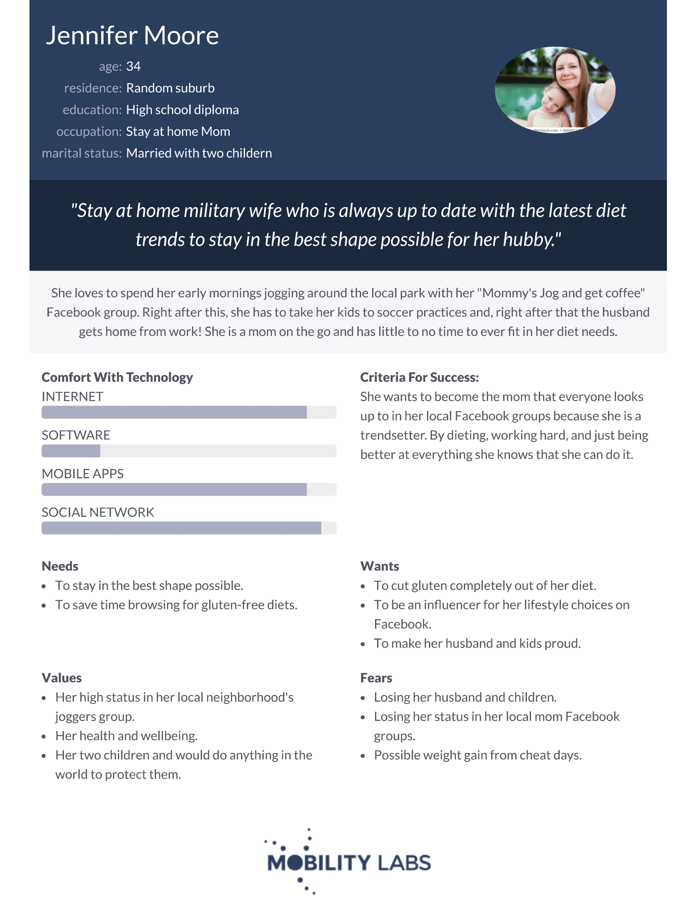

Problem Statement: Low Carb-Centric Restaurants

Our users are frustrated with lack of options at fast food and dine in restaurants not providing full, satisfying options based on low carb dietary restrictions. Our solution should provide users with an easy way to identify restaurants with full keto-meal options, not meals where substitution is necessary.
Affinity Diagram: Low Carb-Centric Restaurants

My partners and I collaborated to create an affinity diagram listing out ideas and issues for a low carb-centric restaurant finder.
Personna: 4 Personnas for Low Carb-Centric Restaurants
These are generalized personnas of people who would uses our app.
Storyboard: 4 Storyboards for Low Carb-Centric Restaurants
These are generalized storyboards of people who would uses our app.
Sketches: 12 Sketches for Low Carb-Centric Restaurants
These are generalized sketches for people who would uses our app.
Paper Prototype: Keto App
An awful prototype filmed with a dated andriod phone that shows how to navigate the keto app.
Usability Testing: Keto App
A usability test that includes a scenario and different steps to figure out how usable my app is.
Lowfi Prototype: Keto App
A prototype made with low-fi to show how our keto app would work.
Hi-fi Prototype: Keto App
A high fidelity prototype made with low-fi to show how our keto app would work.